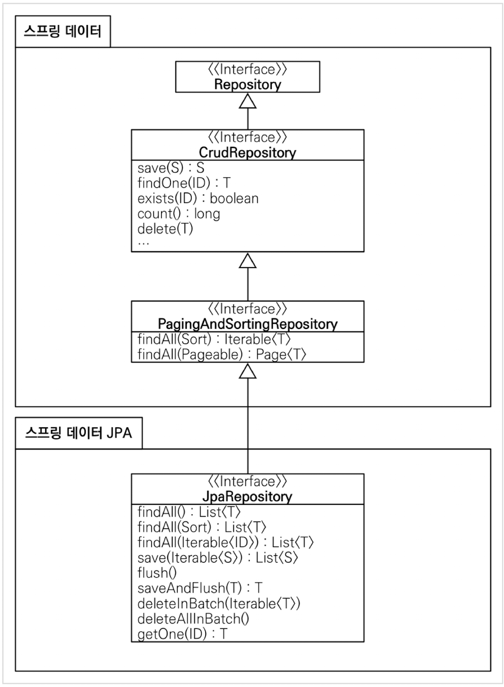

들어가면서
인프런에 있는 김영한님의 실전! 스프링 데이터 JPA 강의를 정리한 글입니다. 세부사항이나 설정 등은 포스팅하지 않으니, 자세한 내용은 강의를 통해 확인해주시길 바랍니다.
목차
- 공통 인터페이스 기능
- 쿼리 메소드 기능
- 페이징과 정렬
- 벌크성 수정 쿼리
- @EntityGraph
- 확장 기능
- 새로운 엔티티를 구별하는 방법
공통 인터페이스 기능
스프링 데이터 JPA가 제공하는 공통 인터페이스를 통해 Repository 생성
1
2
3
public interface MemberRepository extends JpaRepository<Member, Long> {
}
JpaRepository를 확장한 인터페이스는 스프링 데이터 JPA가 구현 클래스를 대신 생성해서 꽂아준다.
원래는 AppConfig에서 @EnableJpaRepositories를 통해 위치를 지정해주어야 하지만 스프링 부트 사용 시 @SpringBootApplication이 자동으로 위치를 지정해준다.
이 때 스프링 데이터 JPA가 컴포넌트 스캔을 자동으로 처리하기 때문에 @Repository를 생략해도 된다.
이러한 JpaRepository 인터페이스는 공통 CRUD 기능을 제공한다.

그림 오류 T findOne(ID) -> Optional
findById(ID)
JpaRepository 주요 메소드
save(S): 새로운 엔티티는 저장하고 이미 있는 엔티티는 병합한다.delete(T): 엔티티 하나를 삭제한다.findById(ID): 엔티티 하나를 조회한다.getOne(ID): 엔티티를 프록시로 조회한다.findAll(): 모든 엔티티를 조회한다. 정렬(Sort)이나 페이징(Pageable) 조건을 파라미터로 제공할 수 있다.
쿼리 메소드 기능
쿼리 메소드의 기능 3가지
- 메소드 이름으로 쿼리 생성
- 메소드 이름으로
JPA NamedQuery호출 @Query어노테이션을 사용해서 레포지토리 인터페이스에 쿼리 직접 정의
메소드 이름으로 쿼리 생성
메소드명을 분석해서 자동으로 JPQL 쿼리를 실행한다.
예를 들어, 순수 JPA 사용 시 이름과 나이를 기준으로 회원을 조회하려고 한다면 아래와 같이 JPQL을 직접 작성한다.
1
2
3
4
5
public List<Member> findByUsernameAndAgeGreaterThan(String username, int age){
return em.createQuery("select m from Member m where m.username=:username " +
"and m.age >:age", Member.class).setParameter("username", username)
.setParameter("age",age).getResultList();
}
스프링 데이터 JPA에서는 메소드명만 규칙에 따라 지어주면 된다.
1
2
3
public interface MemberRepository extends JpaRepository<Member, Long> {
List<Member> findByUsernameAndAgeGreaterThan(String username, int age);
}
이 때 메소드명으로 사용되는 키워드는 다음과 같다.
| 키워드 | 예시 | JPQL |
|---|---|---|
| Distinct | findDistinctBy… | select distinct … where … |
| And | findByNameAndAge | … where x.name =? and x.age =? |
| Or | findByNameOrNickName | … where x.name = ? or x.nickname = ? |
| Is, Equals | findByName, findByNameIs, findByNameEquals | … where x.name = ? |
| Between | findByStartDateBetween | … where x.startDate between ? and ? |
| LessThan | findByAgeLessThan | … where x.age < ? |
| LessThanEqual | findByAgeLessThanEqual | … where x.age <= ? |
| GreaterThan | findByAgeGreaterThan | … where x.age > ? |
| GreaterThanEqual | findByAgeGreaterThanEqual | … where x.age >= ? |
| After | findByStartDateAfter | … where x.startDate > ? |
| Before | findByStartDateBefore | … where x.startDate < ? |
| IsNull, Null | findByAge(Is)Null | … where x.age is null |
| IsNotNull, NotNull | findByAge(Is)NotNull | … where x.age not null |
| Like | findByNameLike | … where x.firstname like ? |
| NotLike | findByNameNotLike | … where x.firstname not like ? |
| StartingWith | findByNameStartingWith | … where x.firstname like ? (parameter bound with appended %) |
| EndingWith | findByNameEndingWith | … where x.firstname like ? (parameter bound with prepended %) |
| Containing | findByNameContaining | … where x.firstname like ? (parameter bound wrapped in %) |
| OrderBy | findByAgeOrderByNameDesc | … where x.age = ?1 order by x.name desc |
| Not | findByNameNot | … where x.lastname <> ? |
| In | findByAgeIn(Collection<Age> ages) | … where x.age in ? |
| NotIn | findByAgeNotIn(Collection<Age> ages) | … where x.age not in ? |
| True | findByActiveTrue() | … where x.active = true |
| False | findByActiveFalse() | … where x.active = false |
| IgnoreCase | findByNameIgnoreCase | … where UPPER(x.name) = UPPER(?) |
- 조회 :
find...By,read...By,query...By,get...By- 이 때
...에는 원하는 식별자명을 자유롭게 사용할 수 있다.
- 이 때
COUNT :
count...By-> 반환타입LongEXISTS :
exists...By-> 반환타입boolean삭제 :
delete...By,remove...By-> 반환타입long- LIMIT :
findFirst,findFirst3,findTop,findTop5
관련된 더 많은 정보는 스프링 데이터 JPA 공식 문서를 참조하자.
@Query
1
2
3
4
public interface MemberRepository extends JpaRepository<Member, Long> {
@Query("select m from Member m where m.username= :username and m.age =:age")
List<Member> findUser(@Param("username")String username,@Param("age")int age);
}
실행할 메소드에 정적 쿼리를 직접 작성하기때문에 이름없는 Named 쿼리라고도 볼 수 있다. 그렇기 떄문에 @Query를 사용해도 JPA named 쿼리처럼 애플리케이션 실행 시점에서 문법 오류를 발견할 수 있다.
위에서 알아본 메소드명을 통한 자동 쿼리 생성 기능은 파라미터가 많아지면 메소드 이름이 매우 길어지기 때문에 @Query를 사용하는 경우가 많다.
이 때 쿼리에 전달할 변수는 @Param을 통해 파라미터로 전달받는다.
페이징과 정렬
페이징과 정렬 파라미터
org.springframework.data.domain.Sortorg.springframework.data.domain.Pageable
특별한 반환 타입
org.springframework.data.domain.Page: 추가 count 쿼리 결과를 포함하는 페이징 방식org.springframework.data.domain.Slice: 추가 count 쿼리 없이 다음 페이지만 확인 가능 (내부적으로 limit+1 조회)List: 추가 count 쿼리 없이 결과만 반환
페이징과 정렬 사용 예제
1
2
3
4
Page<Member> findByUsername(String name, Pageable pageable);
Slice<Member> findByUsername(String name, Pageable pageable);
List<Member> findByUsername(String name, Pageable pageable);
List<Member> findByUsername(String name, Sort sort);
이것을 활용해서 다음 조건으로 페이징과 정렬을 사용하는 예제를 살펴보자.
- 검색 조건 : 나이가 10살 이상
- 정렬 조건 : 이름으로 내림차순
- 페이징 조건 : 첫 번째 페이지, 페이지당 보여줄 데이터는 3건
1
2
3
public interface MemberRepository extends JpaRepository<Member, Long> {
Page<Member> findByAge(int age, Pageable pageable);
}
1
2
3
4
5
6
7
8
9
10
11
12
13
14
15
16
17
18
19
20
21
22
23
24
25
26
27
28
@Test
void pagingTest(){
//given
memberRepository.save(new Member("member1", 10));
memberRepository.save(new Member("member2", 10));
memberRepository.save(new Member("member3", 10));
memberRepository.save(new Member("member4", 10));
memberRepository.save(new Member("member5", 10));
PageRequest pageRequest = PageRequest.of(0, 3,
Sort.by(Sort.Direction.DESC, "username"));
//when
Page<Member> page = memberRepository.findByAge(10, pageRequest);
//then
List<Member> members = page.getContent(); //조회된 데이터
long totalElements = page.getTotalElements();
members.forEach(System.out::println);
System.out.println(totalElements);
assertThat(members.size()).isEqualTo(3); //조회된 데이터 수
assertThat(page.getTotalElements()).isEqualTo(5); //전체 데이터 수
assertThat(page.getNumber()).isEqualTo(0); //페이지 번호 (0번부터 시작)
assertThat(page.getTotalPages()).isEqualTo(2); //전체 페이지 수
assertThat(page.isFirst()).isTrue(); //첫번쨰 항목인지
assertThat(page.hasNext()).isTrue(); //다음 페이지가 있는지
}
메소드의 파라미터로 전달받은 Pageable은 인터페이스다. 따라서 실제 사용 시에 해당 인터페이스를 구현한 PageRequest 객체를 사용한다.
PageRequest 생성자의 첫 번째 파라미터에는 현재 페이지를, 두 번째 파라미터에는 조회할 데이터 수를 입력한다. 추가적으로 정렬 정보도 전달할 수 있다.
Page 사용 시, 상황에 따라 적절히 카운트 쿼리를 분리해서 조회 성능을 최적화할 수 있다.
1
2
3
@Query(value = "select m from Member m left join m.team t",
countQuery="select count(m.username) from Member m")
Page<Member> findByAge(int age, Pageable pageable)
이 때, 엔티티를 바로 반환하는 대신, 페이지를 유지하면서 DTO로 반환하기 위해서는 map()을 사용한다.
1
2
Page<Member> page = memberRepository.findByAge(10, pageRequest);
Page<MemberDto> memberDtoPage = page.map(MemberDto::new);
벌크성 수정 쿼리
스프링 데이터 JPA를 사용한 벌크성 수정 쿼리
1
2
3
@Modifying
@Query("update Member m set m.age = m.age+1 where m.age >=:age")
int bulkAgePlus(@Param("age") int age);
벌크성 수정, 삭제 쿼리는 메소드에 @Modifying 어노테이션을 사용해야 쿼리가 내부적으로 executeUpdate()로 실행되기 때문에, 추가하지 않으면 예외가 발생한다.
앞서 JPA 기초에서 배웠듯이, 벌크성 쿼리를 실행하고 나면 꼭 영속성 컨텍스트를 비워줌으로써 DB와 영속성 컨텍스트 내 데이터를 일치시켜야 한다. 스프링 데이터 JPA에서는 @Modifying(clearAutomatically = true)로 사용하면 벌크 연산 뒤에 영속성 컨텍스트를 자동으로 비워준다.
@EntityGraph
@EntityGraph는 연관된 엔티티들을 SQL 한 방에 조회하는 방법, 즉 fecth join을 사용한다.
JPQL 패치 조인
1
2
@Query("select m from Member m join fetch m.team t")
List<Member> findMemberFetchJoin();
스프링 데이터 JPA는 JPA가 제공하는 엔티티 그래프 기능을 편리하게 사용하도록 도와준다. 이 어노테이션을 사용하면 JPQL 없이 패치 조인을 사용할 수 있다.
JPQL에도 적용할 수 있다.
1
2
3
4
5
6
7
8
9
10
11
12
13
//공통 메소드 오버라이드
@Override
@EntityGraph(attributePaths={"team"})
List<Member> findAll();
//JPQL + 엔티티 그래프
@EntityGraph(attributePaths={"team"})
@Query("select m from Member m")
List<Member> findMemberEntityGraph();
//메소드 이름으로 쿼리 + 엔티티 그래프
@EntityGraph(attributePaths={"team"})
List<Member> findByUsername(String username);
예시로 확인할 수 있듯이 사실상 패치 조인의 간편 버전이라고 볼 수 있으며, 이 때 내부적으로 LEFT OUTER JOIN을 사용한다.
확장 기능
사용자 정의 리포지토리 구현
스프링 데이터 JPA의 리포지토리는 인터페이스만 정의하고 구현체는 스프링이 자동으로 생성해서 꽂아준다.
이 때 다양한 이유로 인터페이스의 메소드를 직접 구현하고 싶을 수 있는데, 사용자 정의 리포지토리를 구현함으로써 해결할 수 있다.
사용자 정의 인터페이스
1
2
3
public interface MemberRepositoryCustom{
List<Member> findMemberCustom();
}
사용자 정의 인터페이스 구현 클래스
1
2
3
4
5
6
7
8
9
10
@RequiredArgsConstructor
public class MemberRepositoryImpl implements MemberRepositoryCustom{
private final EntityManager em;
@Override
public List<Member> findMemerCustom(){
return em.createQuery("select m from Member m", Member.class)
.getResultList();
}
}
사용자 정의 인터페이스 상속
1
2
3
public interface MemberRepository
extends JpaRepository<Member, Long>, MemberRepositoryCustom{
}
사용자 정의 메소드 호출 코드
1
List<Member> result = memberRepository.findMemberCustom();
사용자 정의 리포지토리에서 구현체는 JPA 리포지토리 이름 + Impl로 지어야 한다. 이렇게 지어야 스프링 데이터 JPA가 인식해서 스프링 빈으로 자동 등록한다.따라서 위의 예에서는 항상 사용자 정의 리포지토리 구현체 클래스의 이름은 MemberRepositoryImpl이어야 한다.
하지만, 스프링 데이터 2.x 부터는 사용자 정의 인터페이스명 + Impl 방식도 지원한다. 예를 들어, 위의 예제에서 MemberRepositoryImpl 대신에 MemberRepositoryCustomImpl로 구현해도 인식한다.
사용자 정의 리포지토리는 주로 QueryDSL이나 SpringJdbcTemplate을 함께 사용할 때 사용한다. 하지만 항상 사용자 정의 리포지토리를 만들 필요없이, 경우에 따라 핵심 비즈니스 로직과 화면에 맞춘 로직에 따른 리포지토리를 분리하는 것이 좋다.
Auditing
만약 엔티티를 생성하고 변경할 때, 변경한 사람과 시간을 추적하고 싶다면 등록일, 수정일, 등록자, 수정자를 DB에 함께 저장해야 한다.
순수 JPA 사용 코드
JPA의 이벤트 어노테이션인 @PrePersist, @PostPersist, @PreUpdate, @PostUpdate를 사용해서 구현한다.
1
2
3
4
5
6
7
8
9
10
11
12
13
14
15
16
17
18
19
20
@MappedSuperclass
@Getter
public class JpaBaseEntity {
@Column(updatable = false)
private LocalDateTime createDate;
private LocalDateTime updatedDate;
@PrePersist
public void prePersist() {
LocalDateTime now = LocalDateTime.now();
createDate = now;
updatedDate = now;
}
@PreUpdate
public void preUpdate() {
updatedDate = LocalDateTime.now();
}
}
스프링 데이터 JPA 사용
먼저, 설정을 위해서 @EnableJpaAuditing 어노테이션을 스프링 부트 설정 클래스에 적용한 뒤, @EntityListeners(AuditingEntityListener.class)를 엔티티에 적용해야 한다.
그 후 @CreatedDate, @LastModifiedDate, @CreateBy, @LastModifiedBy 어노테이션을 사용한다.
1
2
3
4
5
6
7
8
9
10
11
12
13
14
15
16
17
18
@EntityListeners(AuditingEntityListener.class)
@MappedSuperclass
@Getter
public class BaseEntity {
@CreatedDate
@Column(updatable = false)
private LocalDateTime createdDate;
@LastModifiedDate
private LocalDateTime lastModifiedDate;
@CreatedBy
@Column(updatable = false)
private String createdBy;
@LastModifiedBy
private String lastModifiedBy;
}
등록자, 수정자를 처리해주는 AuditorAware를 스프링 빈으로 등록해주어야 한다.
1
2
3
4
5
6
7
8
9
10
11
12
13
@EnableJpaAuditing
@SpringBootApplication
public class DataJpaApplication {
public static void main(String[] args) {
SpringApplication.run(DataJpaApplication.class, args);
}
@Bean
public AuditorAware<String> auditorProvider() {
return () -> Optional.of(UUID.randomUUID().toString());
}
}
예제를 위해 UUID를 사용했지만, 실무에서는 세션 정보나 스프링 시큐리티 로그인 정보에서 ID를 받아서 사용한다.
Web 확장 - 도메인 클래스 컨버터
도메인 클래스 컨버터 사용 전
1
2
3
4
5
6
7
8
9
10
11
12
@RestController
@RequiredArgsConstructor
public class MemberController {
private final MemberRepository memberRepository;
@GetMapping("/members/{id}")
public String findMember(@PathVariable("id") Long id) {
Member member = memberRepository.findById(id).orElse(null);
return member.getUsername();
}
}
도메인 클래스 컨버터 사용 후
1
2
3
4
5
6
7
8
9
10
11
@RestController
@RequiredArgsConstructor
public class MemberController {
private final MemberRepository memberRepository;
@GetMapping("/member/{id}")
public String findMember2(@PathVariable("id") Member member) {
return member.getUsername();
}
}
HTTP 요청은 회원 id를 받지만, 도메인 클래스 컨버터가 동작해서 회원 엔티티 객체를 반환한다. 이 때 도메인 클래스 컨버터도 리포지토리를 사용해서 엔티티를 찾는다.
주의해야 할 점은 도메인 클래스 컨버터로 엔티티를 파라미터로 직접 받는다면, 이 엔티티는 단순 조회용으로만 사용해야 한다.
트랜잭션이 없는 범위에서 엔티티를 조회했으므로 엔티티를 변경해도 DB에 반영되지 않는다.
Web 확장 - 페이징과 정렬
스프링 데이터가 제공하는 페이징과 정렬을 스프링 MVC에서도 사용할 수 있다.
1
2
3
4
@GetMapping("/members")
public Page<Member> list(Pageable pageable) {
return memberRepository.findAll(pageable);
}
위 예제처럼 파라미터로 Pegeable을 받을 수 있다. 이 때 Pegeable 인터페이스는 PageRequest 객체를 생성한다.
이렇게 Pegeable을 파라미터로 받는 경우, 요청 파라미터를 통해 페이징을 제어할 수 있다.
http://localhost:8080/members?page=0&size=3&sort=id,desc
- page : 현재 페이지, 0부터 시작한다.
- size : 한 페이지에 노출할 데이터 건수
- sort : 정렬 조건을 정의
매번 요청 파라미터를 전달하지 않아도 기본값을 설정할 수 잇다.
- 글로벌 설정 : 스프링 부트
1 2
spring.data.eb.pageable.default-page-size=20 spring.data.eb.pageable.max-page-size=2000
- 개별 설정 :
@PageableDefault어노테이션 사용1 2 3 4 5
@GetMapping("/members") public Page<Member> list(@PageableDefault(size=12, sort="username", direction=Sort.Direction.DESC) Pageable pageable) { return memberRepository.findAll(pageable); }
이 때, 엔티티를 API로 노출하면 다양한 문제가 발생한다. 그래서 엔티티를 꼭 DTO로 반환해야 한다고 거듭 강조했다. Page는 map()을 사용해서 내부 데이터를 변환할 수 있다.
1
2
3
4
@GetMapping("/members")
public Page<MemberDto> list(Pageable pageable){
return memberRepository.findAll(pageable).map(MemberDto::new);
}
새로운 엔티티를 구별하는 방법
스프링 데이터 JPA에서 save() 메소드는 새로운 엔티티면 persist()를 호출하지만, 새로운 엔티티가 아니라면 merge()를 호출한다.
새로운 엔티티를 판단하는 기본 전략은 다음과 같다.
- 식별자가 객체일 때
null로 판단 - 식별자가 자바 기본 타입일 때
0으로 판단 Persistable인터페이스를 구현해서 판단 로직 변경 가능
Persistable
1
2
3
4
5
6
public interface Persistable<ID> {
@Nullable
ID getId();
boolean isNew();
}
만약 Entity의 JPA 식별자 생성 전략이 @GeneratedValue이면 save()호출 시점에 식별자가 존재하지 않기때문에 새로운 엔티티로 인식해 persist()가 호출된다.
그런데 JPA 생성 전략에 @Id만 사용해서 직접 할당하는 경우, 이미 식별자 값이 존재하는 상태로 save()를 호출할 것이다. 따라서 이 경우에는 merge()가 호출된다. merge()는 우선 DB에 같은 id를 가진 데이터가 있는지 확인하고, 없으면 새로운 엔티티로 인지하는 로직을 가지기 때문에 매우 비효율적이다.
따라서 Persistable을 사용해서 새로운 엔티티 확인 여부를 직접 구현하는 것이 효과적이다. 이 때 등록시간(@CreatedDate)을 조합해서 이 필드로 새로운 엔티티 여부를 확인하면 편리하다.
Persistable 구현 예제
1
2
3
4
5
6
7
8
9
10
11
12
13
14
15
16
17
18
19
20
21
@Entity
@Getter
@EntityListeners(AuditingEntityListener.class)
@NoArgsConstructor(access = AccessLevel.PROTECTED)
public class Item implements Persistable<String> {
@Id
private String id;
@CreatedDate
private LocalDateTime createdDate;
public Item(String id) {
this.id = id;
}
@Override
public boolean isNew() {
return createdDate == null;
}
}